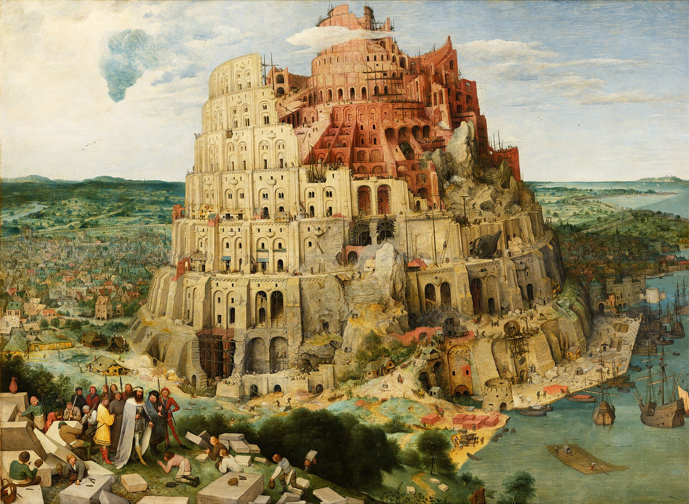

El relato de la Torre de Babel es brevísimo —apenas nueve versículos—, pero su imagen es imborrable: una humanidad unida que construye una torre "cuya cúspide llegue al cielo", y un Dios que baja, confunde su lengua y la dispersa por la Tierra. El relato pretende explicar dos cosas: por qué existen tantos idiomas y por qué los pueblos están dispersos. Veamos qué hay detrás.
01La torre era real
Lo primero que sorprende es que la torre tiene un modelo histórico concreto. En Babilonia se alzaba un zigurat monumental llamado Etemenanki —"Templo del fundamento del cielo y la tierra"—, dedicado al dios Marduk. Era una pirámide escalonada de ladrillo con una base de unos 91 metros de lado, que en su forma final, reconstruida por Nabucodonosor II, pudo alcanzar los 70 u 80 metros de altura. Sus ruinas fueron excavadas por el arqueólogo alemán Robert Koldewey hacia 1913.

Los ziggurats eran "montañas artificiales" coronadas por un templo: el punto donde el cielo y la tierra se tocaban. Una inscripción de Nabucodonosor sobre Etemenanki se jacta de haber "elevado su cima hasta el cielo" —casi las mismas palabras del Génesis—, y describe el uso de ladrillo cocido y betún (asfalto) como argamasa, exactamente los materiales que menciona el relato bíblico. La coincidencia no es casual.
La Torre de Babel se inspira en un edificio que existía de verdad: el gran zigurat de Babilonia, Etemenanki. Hasta los materiales que menciona la Biblia —ladrillo y asfalto— coinciden con los de la construcción real.
02Una crítica a Babilonia
¿Por qué un relato israelita convertiría el mayor monumento de Babilonia en símbolo de la arrogancia castigada? La respuesta está en la historia. Es muy probable que el relato tomara su forma durante el exilio en Babilonia (siglo VI a.C.), cuando los judíos deportados vieron con sus propios ojos ese zigurat colosal, símbolo del poder imperial que los había sometido. Convertirlo en un monumento a la soberbia humana, derribado por Dios, era una forma de crítica teológica y política al imperio que los oprimía.
El propio nombre esconde esa punzada. Los babilonios llamaban a su ciudad Bāb-ilu, "puerta del dios". Pero el texto hebreo juega con la palabra balal, "confundir", para dar a "Babel" un sentido burlón: no la gloriosa "puerta de dios", sino el lugar de la "confusión". Es un juego de palabras deliberado, un dardo irónico contra la capital del imperio.

03Cómo nacen de verdad las lenguas
El relato ofrece una explicación para la diversidad de idiomas: existía una sola lengua, y Dios la multiplicó de golpe como castigo. Es lo que los estudiosos llaman un relato etiológico: una historia que explica el origen de algo que la gente observa (aquí, por qué hablamos lenguas distintas).
La lingüística moderna describe un proceso completamente diferente, y sin ningún acontecimiento único. Las lenguas divergen lentamente, a lo largo de miles de años, cuando grupos de hablantes se separan: cada comunidad acumula pequeños cambios en el sonido, el vocabulario y la gramática, hasta que, con los siglos, los dialectos se vuelven lenguas mutuamente incomprensibles. Así el latín se convirtió en español, francés, italiano y portugués. No hizo falta ningún castigo divino: basta el tiempo y la distancia. Y el proceso es rastreable: los lingüistas reconstruyen "árboles" de familias de lenguas emparentadas, como el indoeuropeo, que remontan a lenguas madre habladas hace miles de años.
Además, la diversidad de lenguas es mucho más antigua que Babilonia. Cuando se construyó el zigurat de Etemenanki, ya se hablaban y escribían numerosas lenguas distintas por todo el mundo desde hacía milenios. La torre no pudo ser el origen de algo que ya existía mucho antes.
04Qué nos dice el relato
Leer Babel como lo que es —un relato etiológico y una crítica al imperio— no lo empobrece: lo ilumina. Deja de ser una teoría fallida sobre el origen de los idiomas y se revela como lo que sus autores quisieron: una reflexión punzante sobre la ambición humana, sobre los imperios que se creen capaces de tocar el cielo, y sobre su caída. No es casualidad que la imagen de la torre haya perdurado como metáfora de la soberbia, de Brueghel a los debates actuales sobre la tecnología. El relato funciona como literatura y como crítica; simplemente no funciona como lingüística —porque nunca pretendió serlo—.
Toda la humanidad hablaba una lengua; Dios la confundió en Babel, y de ahí surgieron de golpe todos los idiomas y la dispersión de los pueblos.
Las lenguas divergen lentamente durante milenios, sin un único origen. El relato es una etiología y una crítica al imperio babilónico, inspirada en el zigurat Etemenanki.
Lectura: que las lenguas divergen gradualmente y no de un único evento es consenso lingüístico absoluto. La identificación de la torre con el zigurat Etemenanki y el origen del relato en el contexto babilónico son ampliamente aceptados. El detalle de cuándo se redactó exactamente admite matices.
La identificación de la Torre de Babel con el zigurat Etemenanki de Babilonia es ampliamente sostenida (Britannica, National Geographic, y los trabajos del asiriólogo Andrew George). Las ruinas fueron excavadas por Robert Koldewey ca. 1913; las inscripciones de Nabucodonosor II y su padre Nabopolassar describen la construcción con paralelos verbales al Génesis.
El juego de palabras entre Bāb-ilu ("puerta del dios") y el hebreo balal ("confundir") y la lectura del relato como crítica al imperio son interpretaciones académicas habituales. Existe un paralelo sumerio en Enmerkar y el señor de Aratta.
El modelo de divergencia lingüística (familias de lenguas, reconstrucción de protolenguas) es el marco estándar de la lingüística histórica. La entrega distingue el relato como literatura etiológica de la explicación científica del origen de las lenguas, sin descalificar su valor cultural o teológico.